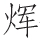
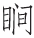

赞曰：
红线下世，毒哉仙仙。隐娘出没，跨黑白卫。香丸袅袅，游刃香烟。崔妾白练，夜半忽失。侠妪条裂，宅众神耳。贾妻断婴，离恨以豁。解洵娶妇，川陆毕具。三鬟携珠，塔户严扃。车中飞度，尺馀一孔。
这一篇《赞》 ［1］ ，都是序着从前剑侠女子的事 ［2］ 。从来世间有这一家道术，不论男女，都有习他的。虽非真仙的派 ［3］ ，却是专一除恶扶善，功行透了的，也就借此成仙。所以好事的，类集他做《剑侠传》。又有专把女子类成一书，做《侠女传》。
前面这《赞》上说的，都是女子。那红线就是潞州薛嵩节度家小青衣 ［4］ 。因为魏博节度田承嗣养三千外宅儿男 ［5］ ，要吞并潞州。薛嵩日夜忧闷，红线闻知，弄出剑术手段，飞身到魏博。夜漏三时 ［6］ ，往返七百里，取了他床头金盒归来。明日，魏博搜捕金盒，一军忧疑，这里却教了使人送还他去。田承嗣一见惊慌，知是剑侠，恐怕取他首级，把邪谋都息了。后来，红线说出前世是个男子，因误用医药杀人，故此罚为女子，今已功成，修仙去了。这是红线的出处。
那隐娘姓聂 ［7］ ，魏博大将聂锋之女。幼年撞着乞食老尼摄去，教成异术。后来嫁了丈夫，各跨一蹇驴，一黑一白。蹇驴是卫地所产 ［8］ ，故又叫做“卫”。用时骑着，不用时就不见了，元来是纸做的。他先前在魏帅左右，魏帅与许帅刘昌裔不和 ［9］ ，要隐娘去取他首级。不想那刘节度善算，算定隐娘夫妻该入境，先叫卫将早至城北候他。约道：“但是一男一女，骑黑白二驴的便是。可就传我命拜迎。”隐娘到许，遇见如此，服刘公神明，便弃魏归许。魏帅知道，先遣精精儿来杀他，反被隐娘杀了。又使妙手空空儿来。隐娘化为蠛蠓 ［10］ ，飞入刘节度口中，教刘节度将于阗国美玉围在颈上 ［11］ 。那空空儿三更来到，将匕首项下一划，被玉遮了，其声铿然，划不能透。空空儿羞道不中，一去千里，再不来了。刘节度与隐娘俱得免难。这是隐娘的出处。
那香丸女子同一侍儿住观音里 ［12］ ，一书生闲步，见他美貌，心动。旁有恶少年数人，就说他许多淫邪不美之行，书生贱之。及归家，与妻言及，却与妻家有亲，是个极高洁古怪的女子，亲戚都是敬畏他的。书生不平，要替他寻恶少年出气，未行。只见女子叫侍儿来谢道：“郎君如此好心，虽然未行，主母感恩不尽。”就邀书生过去，治酒请他独酌。饮到半中间，侍儿负一皮袋来，对书生道：“是主母相赠的。”开来一看，乃是三四个人头，颜色未变，都是书生平日受他侮害的仇人。书生吃了一惊，怕有累及，急要逃去。侍儿道：“莫怕！莫怕！”怀中取出一包白色有光的药来，用小指甲挑些些弹在头断处。只见头渐缩小，变成李子大。侍儿一个个撮在口中吃了，吐出核来，也是李子。侍儿吃罢，又对书生道：“主母也要郎君替他报仇，杀这些恶少年。”书生谢道：“我如何干得这等事？”侍儿进一香丸，道：“不劳郎君动手，但扫净书房，焚此香于炉中，看香烟那里去，就跟了去，必然成事。”又将先前皮袋与他，道：“有人头尽纳在此中，仍旧随烟归来，不要惧怕。”书生依言做去，只见香烟袅袅，行处有光，墙壁不碍。每到一处，遇一恶少年，烟绕颈三匝，头已自落，其家不知不觉。书生便将头入皮袋中。如此数处，烟袅袅归来，书生已随了来。到家尚未三鼓，恰如做梦一般。事完，香丸飞去。侍儿已来，取头弹药，照前吃了，对书生道：“主母传语郎君：这是畏关。此关一过，打点共做神仙便了。”后来不知所往。这女子、书生都不知姓名，只传得有《香丸志》。
那崔妾是 ［13］ ，唐贞元年间 ［14］ ，博陵崔慎思 ［15］ ，应进士举，京中赁房居住。房主是个没丈夫的妇人，年止三十馀，有容色。慎思遣媒道意，要纳为妻。妇人不肯，道：“我非宦家之女，门楣不对，他日必有悔，只可做妾。”遂随了慎思。二年，生了一子。问他姓氏，只不肯说。一日，崔慎思与他同上了床。睡至半夜，忽然不见。崔生疑心有甚奸情事了，不胜忿怒，遂走出堂前。走来走去，正自彷徨。忽见妇人在屋上走下来。白练缠身，右手持匕首，左手提一个人头。对崔生道：“我父昔年被郡守枉杀，求报数年未得，今事已成，不可久留。”遂把宅子赠了崔生，逾墙而去。崔生惊惶。少顷又来，道是再哺孩子些乳去。须臾出来，道：“从此永别。”竟自去了。崔生回房，看看儿子已被杀死。他要免心中记挂，故如此。所以说“崔妾白练”的话。
那侠妪的事 ［16］ ，乃元雍妾修容自言。小时里中盗起，有一老妪来对他母亲说道：“你家从来多阴德，虽有盗乱，不必惊怕，吾当藏过你等。”袖中取出黑绫二尺，裂作条子，教每人臂上系着一条，道：“但随我来！”修容母子随至一道院，老妪指一个神像道：“汝等可躲在他耳中。”叫修容母子闭了眼，背了他进去。小小神像，他母子住在耳中，却象一间房中，毫不窄隘。老妪朝夜来看，饮食都是他送来。这神像耳孔只有指头大小，但是饮食到来，耳孔便大起来。后来盗平，仍如前负了归家。修容要拜为师，誓修苦行，报他恩德。老妪说：“仙骨尚微。”不肯收他。后来不知那里去了。所以说“侠妪神耳”的说话。
那贾人妻的 ［17］ ，与崔慎思妾差不多。但彼是馀干县尉王立，调选流落 ［18］ ，遇着美妇，道是元系贾人妻子，夫亡十年，颇有家私，留王立为婿，生了一子。后来，也是一日提了人头回来，道：“有仇已报，立刻离京。”去了复来，说是：“再乳婴儿，以豁离恨。”抚毕便去。回灯褰帐，小儿身首已在两处。所以说“贾妻断婴”的话，却是崔妻也曾做过的。
那解洵是宋时的武职官 ［19］ ，靖康之乱，陷在北地，孤苦零落。亲戚怜他，替他另娶一妇为妻。那妇人妆奁丰厚，洵得以存活。偶逢重阳日，想起旧妻坠泪。妇人问知欲归本朝，便替他备办，水陆之费毕具，与他同行。一路水宿山行，防闲营护，皆得其力。到家，其兄解潜军功累积，已为大帅。相见甚喜，赠以四婢。解洵宠爱了，与妇人渐疏。妇人一日酒间责洵道：“汝不记昔年乞食赵魏时事乎？非我，已为饿莩。今一旦得志，便尔忘恩，非大丈夫所为。”洵已有酒意，听罢大怒，奋起拳头，连连打去。妇人忍着冷笑，洵又唾骂不止。妇人忽然站起，灯烛皆暗，冷气袭人，四妾惊惶仆地。少顷，灯烛复明，四妾才敢起来。看时，洵已被杀在地上，连头都没了。妇人及房中所有，一些不见踪影。解潜闻知，差壮勇三千人，各处追捕，并无下落。这叫做“解洵娶妇”。
那三鬟女子 ［20］ ，因为潘将军失却玉念珠，无处访寻，却是他与朋侪作戏，取来挂在慈恩寺塔院相轮上面 ［21］ 。后潘家悬重赏，其舅王超问起，他许取还。时寺门方开，塔户尚锁，只见他势如飞鸟，已在相轮上，举手示超，取了念珠下来，王超自去讨赏。明日，女子已不见了。
那车中女子又是怎说 ［22］ ？因吴郡有一举子，入京应举，有两少年引他到家，坐定，只见门迎一车进内，车中走出一女子，请举子试技。那举子只会着靴在壁上行得数步。女子叫坐中少年各呈妙技。有的在壁上行，有的手撮椽子行，轻捷却像飞鸟。举子惊服，辞去。数日后，复见前两少年来借马，举子只得与他。明日，内苑失物 ［23］ ，唯收得驮物的马。追问马主，捉举子到内侍省勘问 ［24］ 。驱入小门，吏自后一推，倒落深坑数丈。仰望屋顶七八丈，唯见一孔，才开一尺有多。举子苦楚间，忽见一物如鸟，飞下到身边。看时，却是前日女子。把绢重系举子胳膊讫，绢头系女子身上。女子腾身飞出宫城，去门数十里乃下。对举子云：“君且归，不可在此。”举人乞食寄宿，得达吴地。
这两个女子便都有些盗贼意思。不比前边这几个，报仇雪耻，救难解危，方是修仙正路。然要晓世上有此一种人，所以历历可纪，不是脱空的说话 ［25］ 。而今再说一个有侠术的女子，救着一个落难之人，说出许多剑侠的议论，从古未经人道的，真是精绝。有诗为证：
念珠取却犹为戏，若似车中便累人。
试听韦娘一席话，须知正直乃为真。
话说徽州府有一商人，姓程，名德瑜，表字元玉。禀性简默端重，不妄言笑，忠厚老成。专一走川、陕，做客贩货，大得利息。一日，收了货钱，待要归家，与带去仆人收拾停当。行囊丰满，自不必说。自骑一匹马，仆人骑了牲口 ［26］ ，起身行路。来过文、阶道中 ［27］ ，与一伙做客的人，同落一个饭店买酒饭吃。正吃之间，只见一个妇人骑了驴儿，也到店前下了，走将进来。程元玉抬头看时，却是三十来岁的模样。面颜也尽标致，只是装束气质带些武气，却是雄纠纠的。饭店中客人个个颠头耸脑，看他说他，胡猜乱语，只有程元玉端坐不瞧。那妇人都看在眼里。吃罢了饭，忽然举起两袖，抖一抖道：“适才忘带了钱来。今饭多吃过了主人的，却是怎好？”那店中先前看他这些人都笑将起来，有的道：“元来是个骗饭吃的！”有的道：“敢是真个忘了 ［28］ ？”有的道：“看他模样，也是个江湖上人，不像个本分的，骗饭的事也有。”那店家后生见说没钱，一把扯住不放。店主又发作道：“青天白日，难道有得你吃了饭，不还钱不成？”妇人只说：“不带得来，下次补还。”店主道：“谁认得你！”正难分解，只见程元玉便走上前来，说道：“看此娘子光景，岂是要少这数文钱的？必是真失带了出来。如何这等逼他？”就把手腰间去摸出一串钱来，道：“该多少，都是我还了就是。”店家才放了手。算一算帐，取了钱去。那妇人走到程元玉跟前，再拜道：“公是个长者 ［29］ ，愿闻高姓大名，好加倍奉还。”程元玉道：“些些小事，何足挂齿！还也不消还得，姓名也不消问得。”那妇人道：“休如此说！公去前面，当有小小惊恐，妾将在此处出些力气报公，所以必要问姓名，万勿隐讳。若要晓得妾的姓氏，但记着韦十一娘便是。”程元玉见他说话有些尴尬，不解其故，只得把名姓说了。妇人道：“妾在城西去探一个亲眷，少刻就到东来。”跨上驴儿，加上一鞭，飞也似去了。
程元玉同仆人出了店门，骑了牲口，一头走，一头疑心。细思适间之话，好不蹊跷。随又忖道：“妇人之言，何足凭准！况且他一顿饭钱尚不能预备，就有惊恐，他如何出力相报得？”以口问心，行了几里。只见途间一人，头带毡笠，身背皮袋，满身灰尘，是个惯走长路的模样。或在前，或在后，参差不一，时常撞见。程元玉在马上问他道：“前面到何处可以宿歇？”那人道：“此去六十里，有杨松镇，是个安歇客商的所在，近处却无宿头。”程元玉也晓得有个杨松镇，就问道：“今日晏了些，还可到得那里么？”那人抬头，把日影看了一看道：“我到得，你到不得。”程元玉道：“又来好笑了。我每是骑马的，反到不得，你是步行的，反说到得，是怎的说？”那人笑道：“此间有一条小路，斜抄去二十里，直到河水湾。再二十里，就是镇上。若你等在官路上走，迂迂曲曲，差了二十多里，故此到不及。”程元玉道：“果有小路快便，相烦指示同行，到了镇上，买酒相谢。”那人欣然前行，道：“这等，都跟我来。”那程元玉只贪路近，又见这厮是个长路人，信着不疑，把适间妇人所言惊恐都忘了。与仆人策马，跟了那人，前进那一条路来。初时平坦好走，走得一里多路，地上渐渐多是山根顽石，驴马走甚不便。再行过去，有陡峻高山，遮在面前。绕山走去，多是深密林子，仰不见天。程元玉主仆俱慌，埋怨那人道：“如何走此等路？”那人笑道：“前边就平了。”程元玉不得已，又随他走。再度过一个岗子，一发比前崎岖了。程元玉心知中计，叫声“不好！不好！”急掣转马头回走。忽然那人唿哨一声 ［30］ ，山前涌出一干人来：
狰狞相貌，劣撅身躯 ［31］ 。无非月黑杀人，不过风高放火。盗亦有道，大曾偷习儒者虚声；师出无名，也会剽窃将家实用。人间偶尔呼为盗，世上于今半是君。
程元玉见不是头，自道必不可脱。慌慌忙忙下了马，躬身作揖道：“所有财物，但凭太保取去 ［32］ 。只是鞍马衣装，须留下做归途盘费则个。”那一伙强盗听了说话，果然只取包裹来，搜了银两去了。程元玉急回身寻时，那马散了缰，也不知那里去了。仆人躲避，一发不知去向。凄凄惶惶，剩得一身，拣个高岗立着，四围一望。不要说不见强盗出没去处，并那仆马消息，杳然无踪。四无人烟，且是天色看看黑将下来，没个道理。叹一声道：“我命休矣！”
正急得没出豁，只听得林间树叶窣窣价声响 ［33］ 。程元玉回头看时，却是一个人，攀藤附葛而来，甚是轻便。走到面前，是个女子，程元玉见了个人，心下已放下了好些惊恐。正要开口问他，那女子忽然走到程元玉面前来，稽首道 ［34］ ：“儿乃韦十一娘弟子青霞是也。吾师知公有惊恐，特教我在此等候。吾师只在前面，公可往会。”程元玉听得说是韦十一娘，又与惊恐之说相合，心下就有些望他救答意思，略放胆大些了，随着青霞前往，行不到半里，那饭店里遇着的妇人来了，迎着道：“公如此大惊，不早来相接，甚是有罪！公货物已取还，仆马也在，不必忧疑。”程元玉是惊坏了的，一时答应不出。十一娘道：“公今夜不可前去。小庵不远，且到庵中一饭，就在此寄宿罢了。前途也去不得。”程元玉不敢违，随了去。过了两个岗子，前见一山陡绝，四周并无联属，高峰插于云外。韦十一娘以手指道：“此是云冈，小庵在其上。”引了程元玉，攀萝附木，一路走上。到了陡绝处，韦与青霞共来扶掖，数步一歇。程元玉气喘当不得，他两个就如平地一般。程元玉抬头看高处，恰似在云雾里；及到得高处，云雾又在下面了。约莫有十数里，方得石磴。磴有百来级，级尽方是平地。有茅堂一所，甚是清雅。请程元玉坐了，十一娘又另唤一女童出来，叫做缥云，整备茶果、山蔌、松醪 ［35］ ，请元玉吃。又叫整饭，意甚殷勤。
程元玉方才性定，欠身道：“程某自不小心，落了小人圈套。若非夫人相救，那讨性命？只是夫人有何法术制得他，讨得程某货物转来？”十一娘道：“吾是剑侠，非凡人也。适间在饭店中，见公修雅，不像他人轻薄，故此相敬。及看公面上，气色有滞，当有忧虞，故意假说乏钱还店，以试公心。见公颇有义气，所以留心在此相候，以报公德。适间鼠辈无礼，已曾晓谕他过了。”程元玉见说，不觉欢喜敬羡。他从小颇看史鉴，晓得有此一种法术。便问道：“闻得剑术起自唐时，到宋时绝了。故自元朝到国朝，竟不闻有此事。夫人在何处学来的？”十一娘道：“此术非起于唐，亦不绝于宋。自黄帝受兵符于九天玄女 ［36］ ，便有此术。其臣风后习之，所以破得蚩尤 ［37］ 。帝以此术神奇，恐人妄用，且上帝立戒甚严，不敢宣扬。但拣一二诚笃之人，口传心授。故此术不曾绝传，也不曾广传。后来张良募来击秦皇 ［38］ ，梁王遣来刺袁盎 ［39］ ，公孙述使来杀来、岑 ［40］ ，李师道用来杀武元衡 ［41］ ，皆此术也。此术既不易轻得，唐之藩镇羡慕仿效，极力延致奇踪异迹之人。一时罔利之辈，不顾好歹，皆来为其所用，所以独称唐时有此。不知彼辈诸人，实犯上帝大戒，后来皆得惨祸。所以彼时先师复申前戒，大略：不得妄传人、妄杀人；不得替恶人出力害善人；不得杀人而居其名。此数戒最大，故赵元昊所遣刺客不敢杀韩魏公 ［42］ ；苗傅、刘正彦所遣刺客不敢杀张德远 ［43］ ，也是怕犯前戒耳。”程元玉道：“史称黄帝与蚩尤战，不说有术。张良所募力士，亦不说术；梁王、公孙述、李师道所遣，皆说是盗，如何是术？”十一娘道：“公言差矣！此正吾道所谓不居其名也。蚩尤生有异像 ［44］ ，且挟奇术 ［45］ ，岂是战阵可以胜得？秦始皇万乘之主，仆从仪卫，何等威焰！且秦法甚严，谁敢击他？也没有击了他，可以脱身的。至如袁盎官居近侍，来、岑身为大帅，武相位在台衡 ［46］ 。或取之万众之中，直戕之辇毂之下，非有神术，怎做得成？且武元衡之死，并其颅骨也取了去。那时慌忙中，谁人能有此闲工夫？史传元自明白，公不曾详玩其旨耳。”程元玉道：“史书上果是如此。假如太史公所传刺客 ［47］ ，想正是此术。至荆轲刺秦王 ［48］ ，说他剑术疏。前边这几个刺客，多是有术的了？”十一娘道：“史迁非也。秦诚无道，亦是天命真主，纵有剑术，岂可轻施？至于专诸、聂政诸人 ［49］ ，不过义气所使，是个有血性好汉，原非有术。若这等都叫做剑术，世间拼死杀人，自身不保的，尽是术了！”程元玉道：“昆仑摩勒如何 ［50］ ？”十一娘道：“这是粗浅的了。聂隐娘、红线方是至妙的。摩勒用形，但能涉历险阻，试他矫健手段。隐娘辈用神，其机玄妙，鬼神莫窥，针孔可度，皮郛可藏 ［51］ ，倏忽千里，往来无迹，岂得无术？”程元玉道：“吾看《虬髯客传》 ［52］ ，说他把仇人之首来吃了，剑术也可以报得私仇的？”十一娘道：“不然。虬髯之事，寓言，非真也。就是报仇，也论曲直。若曲在我，也是不敢用术报得的。”程元玉道：“假如术家所谓仇，必是何等为最？”十一娘道：“仇有几等，皆非私仇。世间有做守令官，虐使小民的，贪其贿又害其命的。世间有做上司官，张大威权，专好谄奉，反害正直的。世间有做将帅，只剥军饷，不勤武事，败坏封疆的。世间有做宰相，树置心腹，专害异己，使贤奸倒置的。世间有做试官，私通关节 ［53］ ，贿赂徇私，黑白混淆，使不才侥幸，才士屈仰的。此皆吾术所必诛者也！至若舞文的滑吏，武断的士豪，自有刑宰主之 ［54］ 。忤逆之子，负心之徒，自有雷部司之 ［55］ 。不关我事。”程元玉曰：“以前所言几等人，曾不闻有显受刺客剑仙杀戮的。”十一娘笑道：“岂可使人晓得的？凡此之辈，杀之之道非一。重者或径取其首领，及其妻子，不必说了；次者或入其咽，断其喉，或伤其心腹，其家但知为暴死，不知其故。又或用术摄其魂，使他颠蹶狂谬，失志而死 ［56］ 。或用术迷其家，使他丑秽迭出，愤郁而死。其有时未到的，但假托神异梦寐，使他惊惧而已。”程元玉道：“剑可得试，令吾一看否？”十一娘道：“大者不可妄用，且怕惊坏了你。小者不妨试试。”乃呼青霞、缥云二女童至，分付道：“程公欲观剑，可试为之。就此悬崖旋制便了。”二女童应诺。十一娘袖中摸出两个丸子，向空一掷，其高数丈。才坠下来，二女童即跃登树枝梢上，以手接着，毫发不差。各接一丸来，一拂，便是雪亮的利刃。程元玉看那树枝，樛曲倒悬，下临绝壑，窅不可测。试一俯 ［57］ ，神魂飞荡，毛发森竖，满身生起寒粟子来 ［58］ 。十一娘言笑自如，二女童运剑，为彼此击刺之状。初时犹自可辨，到得后来，只如两条白练，半空飞绕，并不看见有人。有顿饭时候，然后下来，气不喘，色不变。程元玉叹道：“真神人也！”时已夜深，乃就竹榻上施衾褥，命程在此宿卧，仍加以鹿裘覆之。十一娘与二女童作礼而退，自到石室中去宿了。时方八月天气，程元玉拥裘覆衾，还觉寒凉，盖缘居处高了。
天未明，十一娘已起身梳洗毕。程元玉也梳洗了，出来与他相见了，谢他不尽。十一娘道：“山居简慢，恕罪则个。”又供了早膳。复叫青霞操弓矢，下山寻野味作昼馔。青霞去了一会，无一件将来，回说天气早，没有。再叫缥云去。坐谭未久，缥云提了一雉一兔上山来。十一娘大喜，叫青霞快整治供客。程元玉疑问道：“雉兔山中岂少？何乃难得如此？”十一娘道：“山中元不少，只是潜藏难求。”程元玉笑道：“夫人神术，何求不得，乃难此雉兔？”十一娘道：“公言差矣。吾术岂可用来伤物命以充口腹乎？不唯神理不容，也如此小用不得。雉兔之类，原要挟弓矢、尽人力取之方可。”程元玉深加叹服。须臾，酒至数行。程元玉请道：“夫人家世，愿得一闻。”十一娘踧踖沉吟道 ［59］ ：“事多可愧。然公是忠厚人，言之亦不妨。妾本长安人，父母贫，携妾寄寓平凉 ［60］ ，手艺营生。父亡，独与母居。又二年，将妾嫁同里郑氏子，母又转嫁了人去。郑子佻达无度 ［61］ ，喜侠游。妾屡屡谏他，遂至反目。因弃了妾，同他一伙无藉人到边上立功去 ［62］ ，竟无音耗回来了。伯子不良 ［63］ ，把言语调戏我，我正色拒之。一日，潜走到我床上来，我提床头剑刺之，着了伤走了。我因思，我是一个妇人，既与夫不相得，弃在此间。又与伯同居不便，况且今伤了他，住在此不得了。曾有个赵道姑，自幼爱我，他有神术，道我可传得。因是父母在，不敢自由，而今只索投他去。次日往见道姑，道姑欣然接纳。又道：‘此地不可居。吾山中有庵，可往住之。’就挈我登一峰颠，较此处还险峻，有一团瓢在上 ［64］ ，就住其中，教我法术。至暮，径下山去，只留我独宿。戒我道：‘切勿饮酒及淫色。’我想道，深山之中，那得有此两事？口虽答应，心中不然，遂宿在团瓢中床上。至更馀，有一男子逾墙而入，貌绝美。我遽惊起，问了不答，叱他不退。其人直前，将拥抱我，我不肯从，其人求益坚。我抽剑欲击他，他也出剑相刺。他剑甚精利，我方初学，自知不及，只得丢了剑。哀求他道：‘妾命薄，久已灰心，何忍乱我？且师有明戒，誓不敢犯。’其人不听，以剑加我颈，逼要从他。我引颈受之，曰：‘要死便死，吾志不可夺！’其人收剑，笑道：‘可知子心不变矣！’仔细一看，不是男子，元来是赵道姑，作此试我的。因此道我心坚，尽把术来传了。我术已成，彼自远游，我便居此山中了。”程元玉听罢，愈加钦重。
日已将午。辞了十一娘要行。因问起昨日行装仆马，十一娘道：“前途自有人送还，放心前去。”出药一囊送他，道：“每岁服一丸，可保一年无病。”送程下山，直至大路方别。才别去，行不数步，昨日群盗将行李仆马，已在路旁等候奉还。程元玉将银钱分一半与他，死不敢受。减至一金做酒钱，也必不肯。问是何故？群盗道：“韦家娘子有命，虽千里之外，不敢有违。违了他的，他就知道。我等性命要紧，不敢换货用。”程元玉再三叹息。仍旧装束好了，主仆取路前进。
此后不闻十一娘音耗，已是十馀年。一日，程元玉复到四川。正在栈道中行，有一少妇人，从了一个秀士行走，只管把眼来瞧他。程元玉仔细看来，也像个素相识的，却是再想不起，不知在那里会过。只见那妇人忽然叫道：“程丈别来无恙乎？还记得青霞否？”程元玉方悟是韦十一娘的女童，乃与青霞及秀士相见。青霞对秀士道：“此间便是吾师所重程丈，我也多曾与你说过的。”秀士再与程叙过礼。程问青霞道：“尊师今在何处？此位又是何人？”青霞道：“吾师如旧。吾丈别后数年，妾奉师命，嫁此士人。”程问道：“还有一位缥云何在？”青霞道：“缥云也嫁人了。吾师又另有两个弟子了。我与缥云但逢着时节，才去问省一番 ［65］ 。”程又问道：“娘子今将何往？”青霞道：“有些公事在此要做，不得停留。”说罢作别。看他意态甚是匆匆，一竟去了。过了数日，忽传蜀中某官暴卒。某官性诡激好名，专一暗地坑人夺人。那年进场做房考 ［66］ ，又暗通关节，卖了举人，屈了真才，有像十一娘所说必诛之数。程元玉心疑道：“分明是青霞所说做的公事了。”却不敢说破，此后再也无从相闻。此是吾朝成化年间事。秣陵胡太史汝嘉 ［67］ ，有《韦十一娘传》。诗云：
侠客从来久，韦娘论独奇。
双丸虽有术，一剑本无私。
贤佞能精别，恩仇不浪施。
何当时假腕，刬尽负心儿！
［1］ 赞：古文的一种体式。史传多用。在篇末对前述人物或事件加以集中的褒贬评论。或是散文，或是严整的韵文与骈文。
［2］ 序：即叙。评说。
［3］ 的派：真传，嫡派。
［4］ 红线：唐人袁郊传奇小说《红线传》所写女侠客。潞州：唐时治所在今山西长治县。薛嵩：原为史朝义部将。迎降唐军，任为相、卫、洺、邢等州节度使。有治绩，封郡王。小青衣：小使女。
［5］ 田承嗣：原系安史旧将。后虽归属唐朝廷，据魏博军镇拥兵自重。先后占据魏、博、贝、相、卫、磁、洺七州，与中央对抗。魏博军镇治所在魏州（今河北大名）。
［6］ 夜漏三时：半夜三更。漏，漏壶，古代计时器。
［7］ 隐娘：聂隐娘。唐人裴铏传奇小说《聂隐娘》所写女侠。
［8］ 卫地：指春秋时卫国故地。在今河南省西北部及河北大名地区。
［9］ 许帅：陈许节度使。治所在许昌。刘昌裔自立为节度使。
［10］ 蠛（miè）蠓：小蠓子。一种小飞虫。
［11］ 于阗国：西域古国名。今新疆和田等地。以产玉石著称。
［12］ 香丸女子：故事载元人龙辅所撰《女红馀志》卷上《香丸妇人》。
［13］ 崔妾：故事收于《太平广记》卷194《崔慎思》中。原出于唐人皇甫□所撰《原化记》，后佚。
［14］ 贞元：唐德宗李适（kuò）年号，785—804年。
［15］ 博陵：唐博陵郡。治所在今河北省定县。
［16］ 侠妪：故事见于《女红馀志》卷上《侠妪》。
［17］ 贾（ɡǔ）人妻：故事载于《太平广记》卷196《贾人妻》。原出于唐人薛用弱撰《集异记》。贾人即是商人。
［18］ 调选：在吏部挂名候补新职。
［19］ 解洵：故事载于宋洪迈撰《夷坚志》。
［20］ 三鬟女子：故事原出于《剧谈录》，载《太平广记》卷196《潘将军》。
［21］ 慈恩寺：即大雁塔。在今西安市南郊。相轮：塔顶装饰槃盖。
［22］ 车中女子：故事出《原化记》，载《太平广记》卷193《车中女子》。
［23］ 内苑：皇宫。
［24］ 内侍省：掌管宫廷事务的官署。
［25］ 脱空：平空，无根据。
［26］ 牲口：指驴。
［27］ 文、阶：文州、阶州。即今甘肃文县和武都县。
［28］ 敢是：大概是，可能是。
［29］ 长者：德行好，忠厚人。
［30］ 唿哨：近处暗号是发出短促低声，向远处呼朋引类则是高声大叫的呼啸，都可作“唿哨”解。
［31］ 劣撅：凶悍的样子。
［32］ 太保：对强盗的尊称。犹如说大王、老爷，非指官职。
［33］ 窣窣（sù）价：形容声音细碎。价，助词。
［34］ 稽（qǐ）首：古代是叩头跪拜礼为稽首。后世僧道举手至胸前行礼称稽首。
［35］ 松醪（láo）：松子酒。
［36］ 九天玄女：道教所说女神，人面鸟身。
［37］ 蚩尤：九黎族首领。曾与黄帝战于涿鹿之野，失败被杀。
［38］ “张良”句：张良原为韩国贵族，秦灭韩后，变姓名隐于民间。他曾召募刺客在博浪沙狙击秦始皇未成。
［39］ “梁王”句：梁王刘武。汉景帝曾考虑立他为嗣，袁盎进言劝止。刘武怀恨，派刺客杀了袁盎。
［40］ “公孙述”句：王莽时，公孙述据蜀称帝。刘秀灭王莽后，派征南大将军岑彭攻蜀，中郎将来歙攻公孙述部将。来歙被刺客暗杀，述又派刺客暗杀了岑彭。
［41］ “李师道”句：李师道是唐代淄青藩镇。武元衡是唐宪宗时宰相，被李师道派刺客暗杀于长安。
［42］ “赵元昊”句：赵元昊是西夏开国君主，原姓李。韩魏公即韩琦，北宋名将。因战功追封魏郡王，所以称韩魏公。据宋人周 《清波杂志》记载，韩琦任四路招讨使驻延安，夏人曾派刺客来杀他。结果不忍下手，只要了他一条金带走了。
［43］ “苗傅”句：《宋史》载，张浚驻秀州，夜里有人突然来对他说是苗傅、刘正彦派来的刺客，他不肯杀，叫张浚加强戒备。苗、刘二人后发动政变，逼迫宋高宗退位，被张浚、韩世宗击败斩首。张浚，字德远，抗金名将。
［44］ 异像：古书说蚩尤头上长角、牛耳、须如剑戟。与轩辕（黄帝）作战时，以角牴人，人不能接近。
［45］ 奇术：古书说蚩尤能兴云雾、飞砂走石，黄帝制作指南车才战胜了他。
［46］ 台衡：三台和玉衡，本是星名。位置在帝座紫微宫之前，用来比喻宰相的地位。
［47］ 太史公：西汉司马迁。作《史记》，其中有《刺客列传》。下文荆轲、专诸、聂政均在此传中。
［48］ 荆轲：战国末刺客。受燕太子丹重聘，派到咸阳以献地图为名刺杀秦王（即秦始皇），不成而被杀。
［49］ 专诸：春秋时吴国勇士。吴国公子光（即阖闾）派专诸作刺客，把短剑藏在鱼腹中，伺机刺杀了吴王僚。聂政：战国时韩国刺客。严遂与相国侠累有仇，派聂政刺杀了侠累。
［50］ 昆仑摩勒：唐人裴铏传奇《昆仑奴》中人物，会隐形术。
［51］ 皮郛（fú）：皮肤。
［52］ 《虬髯客传》：唐杜光庭所作传奇小说。虬髯客是其中所写侠客。
［53］ 通关节：卖面子，徇私情，收贿赂，开后门。
［54］ 刑宰：司法官。
［55］ 雷部：风、雨、雷、电等天神。
［56］ 失志：神志不清，精神错乱。
［57］  （jiàn）：窥视，看。
［58］ 寒粟子：鸡皮疙瘩。
［59］ 踧踖（cù jí）：不安的样子。
［60］ 平凉：明代平凉府治，即今甘肃平凉县。
［61］ 佻达：浪荡，轻浮。
［62］ 无藉：无赖。
［63］ 伯子：大伯子，即丈夫的哥哥。
［64］ 团瓢：小屋。
［65］ 问省：问候，请安。
［66］ 房考：阅卷官员。举人考试经义，《诗经》、《书经》、《礼记》等经选取一经，阅卷官也按不同经书分房阅卷。
［67］ 秣陵：南京古称。太史：明代指翰林，都有史职官称，如修撰、编修等。胡汝嘉：嘉靖进士。小说戏曲作家，有小说《兰芽传》、《韦十一娘传》，杂剧《红线记》等。